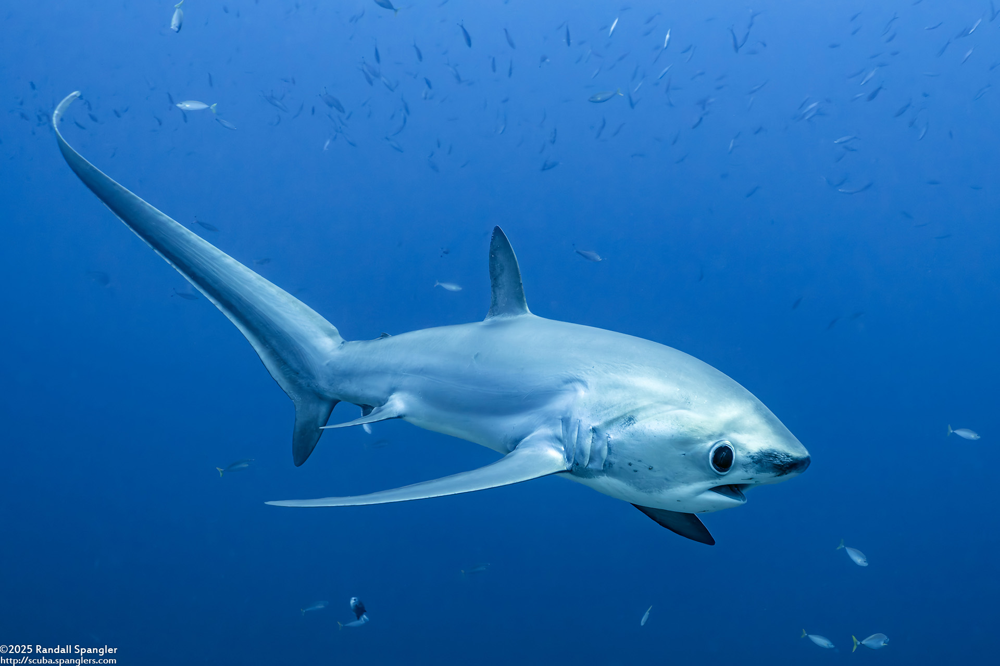

Quick Facts
- First discovered:
- Habitat: Warm and temperate waters all around the world, with a preference toward cool pelagic waters.
- Conservation Status: VULNERABLE
- Size: Males - 2.7m(8'10), Females - 3m(9'10)
- Danger to Humans: Harmless
Overview
 There are three known species of Thresher Sharks: the pelagic, big-eyed, and common thresher shark. These creatures can be easily recognized by their large, long tail, which can be as big, or even bigger than their actual body.
Their tail doesn't just show off their strangeness or uniqueness; it actually serves a purpose. Thresher Sharks will propel themselves forward toward a group of fish or other prey and whip their tail in an attempt to stun the fish, making it easier for them to eat. Although this tail seems like it would be dangerous to humans, threshers will actually do their best to avoid humans and will typically stay towards the bottom of the seabed. They are almost physically incapable of biting people because of the size of their mouths and their small teeth.
Threshers are endothermic, meaning that they can maintain their own body heat despite the coldness of the outside environment. This is what allows them to live in pretty much all temperatures of water around the world.
These sharks are also ovoviviparous, meaning females will keep their eggs inside their bodies, where the eggs will receive nutrients from a yolk sac. Then, when they are ready, they will give birth to live pups, which is not typical of other types of fish and is only really seen in certain species of sharks.